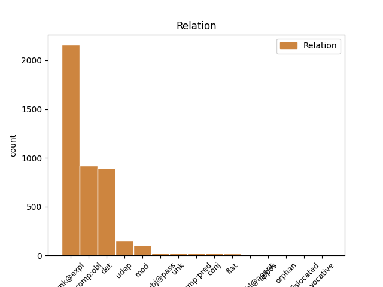
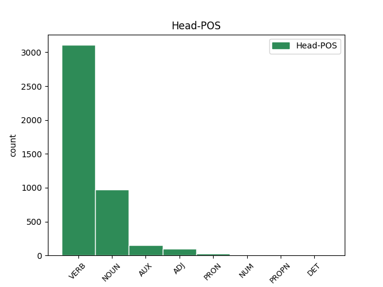
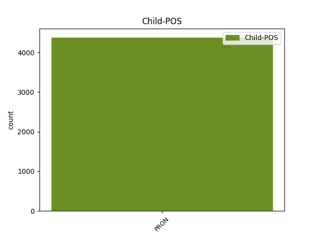

Distribution of features within this leaf



Agreement Rules sorted by frequency.
- When the dependent token is the unk@expl(unk@expl) of the head token, and the dependent token is PRON.
1 Солнце _ _ _ _ 0 _ _ _
2 свѣтит свѣтити VERB V- Mood=Ind|Number=Sing|Person=3|Tense=Pres|VerbForm=Fin|Voice=Act 0 _ _ _
3 ся себе PRON Pk Case=Acc|Number=Sing|Person=3|PronType=Prs|Reflex=Yes 2 unk@expl _ ref=211
4 на _ _ _ _ 0 _ _ _
5 небесѣ _ _ _ _ 0 _ _ _
1 Въ _ _ _ _ 0 _ _ _
2 полѣ _ _ _ _ 0 _ _ _
3 безводнѣ _ _ _ _ 0 _ _ _
4 жаждею _ _ _ _ 0 _ _ _
5 имь _ _ _ _ 0 _ _ _
6 лучи _ _ _ _ 0 _ _ _
7 съпряже _ _ _ _ 0 _ _ _
8 тугою _ _ _ _ 0 _ _ _
9 имъ и PRON Pp Case=Dat|Gender=Masc|Number=Plur|Person=3|PronType=Prs 10 det _ ref=183
10 тули тулъ NOUN Nb Case=Acc|Gender=Masc|Number=Plur 0 _ _ _
11 затче _ _ _ _ 0 _ _ _
1 Не _ _ _ _ 0 _ _ _
2 мало малыи ADJ A- Case=Nom|Degree=Pos|Gender=Neut|Number=Sing|Strength=Strong 0 _ _ _
3 ти ты PRON Pp Case=Dat|Gender=Masc|Number=Sing|Person=2|PronType=Prs 2 comp:obl _ ref=195
4 величія _ _ _ _ 0 _ _ _
5 лелѣявшу _ _ _ _ 0 _ _ _
6 князя _ _ _ _ 0 _ _ _
7 на _ _ _ _ 0 _ _ _
8 влънах _ _ _ _ 0 _ _ _
9 стлавшу _ _ _ _ 0 _ _ _
10 ему _ _ _ _ 0 _ _ _
11 зелѣну _ _ _ _ 0 _ _ _
12 траву _ _ _ _ 0 _ _ _
13 на _ _ _ _ 0 _ _ _
14 своихъ _ _ _ _ 0 _ _ _
15 сребреныхъ _ _ _ _ 0 _ _ _
16 брезѣхъ _ _ _ _ 0 _ _ _
17 одѣвавшу _ _ _ _ 0 _ _ _
18 его _ _ _ _ 0 _ _ _
19 теплыми _ _ _ _ 0 _ _ _
20 мъглами _ _ _ _ 0 _ _ _
21 подъ _ _ _ _ 0 _ _ _
22 сѣнію _ _ _ _ 0 _ _ _
23 зелену _ _ _ _ 0 _ _ _
24 древу _ _ _ _ 0 _ _ _
1 Не _ _ _ _ 0 _ _ _
2 мало _ _ _ _ 0 _ _ _
3 ти _ _ _ _ 0 _ _ _
4 величія _ _ _ _ 0 _ _ _
5 лелѣявшу _ _ _ _ 0 _ _ _
6 князя _ _ _ _ 0 _ _ _
7 на _ _ _ _ 0 _ _ _
8 влънах _ _ _ _ 0 _ _ _
9 стлавшу стьлати VERB V- Case=Dat|Gender=Masc|Number=Sing|Strength=Strong|Tense=Past|VerbForm=Part|Voice=Act 0 _ _ _
10 ему и PRON Pp Case=Dat|Gender=Masc|Number=Sing|Person=3|PronType=Prs 9 udep _ ref=195
11 зелѣну _ _ _ _ 0 _ _ _
12 траву _ _ _ _ 0 _ _ _
13 на _ _ _ _ 0 _ _ _
14 своихъ _ _ _ _ 0 _ _ _
15 сребреныхъ _ _ _ _ 0 _ _ _
16 брезѣхъ _ _ _ _ 0 _ _ _
17 одѣвавшу _ _ _ _ 0 _ _ _
18 его _ _ _ _ 0 _ _ _
19 теплыми _ _ _ _ 0 _ _ _
20 мъглами _ _ _ _ 0 _ _ _
21 подъ _ _ _ _ 0 _ _ _
22 сѣнію _ _ _ _ 0 _ _ _
23 зелену _ _ _ _ 0 _ _ _
24 древу _ _ _ _ 0 _ _ _
1 Нъ _ _ _ _ 0 _ _ _
2 се _ _ _ _ 0 _ _ _
3 зло _ _ _ _ 0 _ _ _
4 княже _ _ _ _ 0 _ _ _
5 ми азъ PRON Pp Case=Dat|Gender=Masc|Number=Sing|Person=1|PronType=Prs 6 mod _ ref=119
6 непособіе непособие NOUN Nb Case=Nom|Gender=Neut|Number=Sing 0 _ _ _
1 и _ _ _ _ 0 _ _ _
2 ꙗко _ _ _ _ 0 _ _ _
3 пристꙋпиша _ _ _ _ 0 _ _ _
4 мʼножество _ _ _ _ 0 _ _ _
5 людеи _ _ _ _ 0 _ _ _
6 рʼвы _ _ _ _ 0 _ _ _
7 засыпати _ _ _ _ 0 _ _ _
8 и _ _ _ _ 0 _ _ _
9 абїе _ _ _ _ 0 _ _ _
10 гражане _ _ _ _ 0 _ _ _
11 зажʼгоша _ _ _ _ 0 _ _ _
12 съсоуды _ _ _ _ 0 _ _ _
13 зелеиныѧ _ _ _ _ 0 _ _ _
14 иже иже PRON Pr Case=Nom|Gender=Masc|Number=Plur|PronType=Rel 15 subj@pass _ ref=297v6
15 бѧхꙋ быти AUX V- Aspect=Imp|Mood=Ind|Number=Plur|Person=3|Tense=Past|VerbForm=Fin|Voice=Act 0 _ _ _
16 задѣланы _ _ _ _ 0 _ _ _
17 внѣ _ _ _ _ 0 _ _ _
18 рʼва _ _ _ _ 0 _ _ _
1 а _ _ _ _ 0 _ _ _
2 самъ _ _ _ _ 0 _ _ _
3 безбожны _ _ _ _ 0 _ _ _
4 съ _ _ _ _ 0 _ _ _
5 всѣми _ _ _ _ 0 _ _ _
6 вои _ _ _ _ 0 _ _ _
7 своими _ _ _ _ 0 _ _ _
8 поиде _ _ _ _ 0 _ _ _
9 въ _ _ _ _ 0 _ _ _
10 врата _ _ _ _ 0 _ _ _
11 с҃тго _ _ _ _ 0 _ _ _
12 романа _ _ _ _ 0 _ _ _
13 кʼ _ _ _ _ 0 _ _ _
14 великои _ _ _ _ 0 _ _ _
15 цр҃кви _ _ _ _ 0 _ _ _
16 в _ _ _ _ 0 _ _ _
17 ню иже PRON Pr Case=Acc|Gender=Fem|Number=Sing|PronType=Rel 0 _ _ _
18 же же PRON Pr Case=Acc|Gender=Fem|Number=Sing|PronType=Rel 17 flat _ ref=317v17
19 бѧхꙋ _ _ _ _ 0 _ _ _
20 събрани _ _ _ _ 0 _ _ _
21 патриарʼхъ _ _ _ _ 0 _ _ _
22 и _ _ _ _ 0 _ _ _
23 весь _ _ _ _ 0 _ _ _
24 клирикʼ _ _ _ _ 0 _ _ _
25 и _ _ _ _ 0 _ _ _
26 нардоу _ _ _ _ 0 _ _ _
27 бесчислено _ _ _ _ 0 _ _ _
28 и _ _ _ _ 0 _ _ _
29 женъ _ _ _ _ 0 _ _ _
30 и _ _ _ _ 0 _ _ _
31 дѣтеи _ _ _ _ 0 _ _ _
1 которое которыи PRON Pi Case=Nom|Gender=Neut|Number=Sing|PronType=Int 3 comp:pred _ ref=152
2 бо _ _ _ _ 0 _ _ _
3 бѣше быти AUX V- Aspect=Imp|Mood=Ind|Number=Sing|Person=3|Tense=Past|VerbForm=Fin|Voice=Act 0 _ _ _
4 насиліе _ _ _ _ 0 _ _ _
5 отъ _ _ _ _ 0 _ _ _
6 земли _ _ _ _ 0 _ _ _
7 Половецкыи _ _ _ _ 0 _ _ _
1 Не _ _ _ _ 0 _ _ _
2 было _ _ _ _ 0 _ _ _
3 онъ _ _ _ _ 0 _ _ _
4 обидѣ _ _ _ _ 0 _ _ _
5 порождено _ _ _ _ 0 _ _ _
6 ни _ _ _ _ 0 _ _ _
7 соколу _ _ _ _ 0 _ _ _
8 ни _ _ _ _ 0 _ _ _
9 кречету кречетъ NOUN Nb Case=Dat|Gender=Masc|Number=Sing 0 _ _ _
10 ни _ _ _ _ 0 _ _ _
11 тебѣ ты PRON Pp Case=Dat|Gender=Masc|Number=Sing|Person=2|PronType=Prs 9 conj _ ref=41
12 чръный _ _ _ _ 0 _ _ _
13 воронъ _ _ _ _ 0 _ _ _
14 поганый _ _ _ _ 0 _ _ _
15 половчине _ _ _ _ 0 _ _ _
1 стрежаше стрѣщи VERB V- Aspect=Imp|Mood=Ind|Number=Sing|Person=2|Tense=Past|VerbForm=Fin|Voice=Act 0 _ _ _
2 его и PRON Pp Case=Gen|Gender=Masc|Number=Sing|Person=3|PronType=Prs 1 unk _ ref=196
3 гоголемъ _ _ _ _ 0 _ _ _
4 на _ _ _ _ 0 _ _ _
5 водѣ _ _ _ _ 0 _ _ _
6 чайцами _ _ _ _ 0 _ _ _
7 на _ _ _ _ 0 _ _ _
8 струяхъ _ _ _ _ 0 _ _ _
9 чрьнядьми _ _ _ _ 0 _ _ _
10 на _ _ _ _ 0 _ _ _
11 ветрѣхъ _ _ _ _ 0 _ _ _
1 Одинъ _ _ _ _ 0 _ _ _
2 братъ братъ NOUN Nb Case=Nom|Gender=Masc|Number=Sing 0 _ _ _
3 одинъ _ _ _ _ 0 _ _ _
4 свѣтъ _ _ _ _ 0 _ _ _
5 свѣтлый _ _ _ _ 0 _ _ _
6 ты ты PRON Pp Case=Nom|Gender=Masc|Number=Sing|Person=2|PronType=Prs 2 appos _ ref=20
7 Игорю _ _ _ _ 0 _ _ _
1 аже _ _ _ _ 0 _ _ _
2 будеть _ _ _ _ 0 _ _ _
3 росѣчена _ _ _ _ 0 _ _ _
4 землѧ _ _ _ _ 0 _ _ _
5 ꙇли _ _ _ _ 0 _ _ _
6 знамениѥ _ _ _ _ 0 _ _ _
7 им и PRON Pp Case=Ins|Gender=Masc|Number=Sing|Person=3|PronType=Prs 9 comp:obl@agent _ ref=70
8 же _ _ _ _ 0 _ _ _
9 ловлено ловити VERB V- Case=Nom|Gender=Neut|Number=Sing|Strength=Strong|Tense=Past|VerbForm=Part|Voice=Pass 0 _ _ _
10 или _ _ _ _ 0 _ _ _
11 сѣть _ _ _ _ 0 _ _ _
12 то _ _ _ _ 0 _ _ _
13 по _ _ _ _ 0 _ _ _
14 верви _ _ _ _ 0 _ _ _
15 искати _ _ _ _ 0 _ _ _
16 татѧ _ _ _ _ 0 _ _ _
17 ли _ _ _ _ 0 _ _ _
18 платити _ _ _ _ 0 _ _ _
19 продажю _ _ _ _ 0 _ _ _
1 а _ _ _ _ 0 _ _ _
2 кодь _ _ _ _ 0 _ _ _
3 ти _ _ _ _ 0 _ _ _
4 мнѣ азъ PRON Pp Case=Dat|Gender=Fem|Number=Sing|Person=1|PronType=Prs 5 orphan _ ref=true
5 хльбь хлѣбъ NOUN Nb Case=Nom|Gender=Masc|Number=Sing 0 _ _ _
6 тꙋ _ _ _ _ 0 _ _ _
7 и _ _ _ _ 0 _ _ _
8 тобѣ _ _ _ _ 0 _ _ _
1 что _ _ _ _ 0 _ _ _
2 придосте приити VERB V- Aspect=Perf|Mood=Ind|Number=Plur|Person=2|Tense=Past|VerbForm=Fin|Voice=Act 0 _ _ _
3 с _ _ _ _ 0 _ _ _
4 хромьцемь _ _ _ _ 0 _ _ _
5 симь _ _ _ _ 0 _ _ _
6 ѡ _ _ _ _ 0 _ _ _
7 вы вы PRON Pp Case=Nom|Gender=Masc|Number=Plur|Person=2|PronType=Prs 2 vocative _ ref=142.2
8 плотници _ _ _ _ 0 _ _ _
9 суще _ _ _ _ 0 _ _ _
1 аче _ _ _ _ 0 _ _ _
2 ѹпустить упустити VERB V- Mood=Ind|Number=Sing|Person=3|Tense=Pres|VerbForm=Fin|Voice=Act 0 _ _ _
3 и _ _ _ _ 0 _ _ _
4 гонѧ _ _ _ _ 0 _ _ _
5 а _ _ _ _ 0 _ _ _
6 собѣ себе PRON Pk Case=Dat|Gender=Masc|Number=Sing|Person=3|PronType=Prs|Reflex=Yes 2 dislocated _ ref=114
7 ѥму _ _ _ _ 0 _ _ _
8 пагуба _ _ _ _ 0 _ _ _
Disagree Examples:
1 и _ _ _ _ 0 _ _ _
2 посолъ _ _ _ _ 0 _ _ _
3 ширвашинъ _ _ _ _ 0 _ _ _
4 асанъ _ _ _ _ 0 _ _ _
5 бѣгъ _ _ _ _ 0 _ _ _
6 дал дати VERB V- Aspect=Res|Case=Nom|Gender=Masc|Number=Sing|Strength=Strong|VerbForm=Part|Voice=Act 0 _ _ _
7 имъ и PRON Pp Case=Dat|Gender=Masc|Number=Plur|Person=3|PronType=Prs 6 comp:obl _ ref=3
8 по _ _ _ _ 0 _ _ _
9 ѡднорѧткы _ _ _ _ 0 _ _ _
10 да _ _ _ _ 0 _ _ _
11 по _ _ _ _ 0 _ _ _
12 полотнѹ _ _ _ _ 0 _ _ _
13 чтобы _ _ _ _ 0 _ _ _
14 провели _ _ _ _ 0 _ _ _
15 мимо _ _ _ _ 0 _ _ _
16 азътарханъ _ _ _ _ 0 _ _ _
1 цр҃ь _ _ _ _ 0 _ _ _
2 насъ мы PRON Pp Case=Gen|Gender=Masc|Number=Plur|Person=1|PronType=Prs 3 comp:obl _ ref=3
3 видѣл видѣти VERB V- Aspect=Res|Case=Nom|Gender=Masc|Number=Sing|Strength=Strong|VerbForm=Part|Voice=Act 0 _ _ _
1 и _ _ _ _ 0 _ _ _
2 билъ _ _ _ _ 0 _ _ _
3 есми _ _ _ _ 0 _ _ _
4 челѡм _ _ _ _ 0 _ _ _
5 василью _ _ _ _ 0 _ _ _
6 папинѹ _ _ _ _ 0 _ _ _
7 да _ _ _ _ 0 _ _ _
8 послѹ _ _ _ _ 0 _ _ _
9 ширвашинѹ _ _ _ _ 0 _ _ _
10 асан _ _ _ _ 0 _ _ _
11 бегѹ _ _ _ _ 0 _ _ _
12 что чьто PRON Pr Case=Acc|Gender=Neut|Number=Sing|PronType=Rel 13 udep _ ref=4
13 есмѧ быти AUX V- Mood=Ind|Number=Plur|Person=1|Tense=Pres|VerbForm=Fin|Voice=Act 0 _ _ _
14 с _ _ _ _ 0 _ _ _
15 нимъ _ _ _ _ 0 _ _ _
16 пришли _ _ _ _ 0 _ _ _
17 чтобы _ _ _ _ 0 _ _ _
18 сѧ _ _ _ _ 0 _ _ _
19 печаловалъ _ _ _ _ 0 _ _ _
20 ѡ _ _ _ _ 0 _ _ _
21 людех _ _ _ _ 0 _ _ _
22 что _ _ _ _ 0 _ _ _
23 их _ _ _ _ 0 _ _ _
24 поимали _ _ _ _ 0 _ _ _
25 под _ _ _ _ 0 _ _ _
26 тархы _ _ _ _ 0 _ _ _
27 каитаки _ _ _ _ 0 _ _ _
1 и _ _ _ _ 0 _ _ _
2 билъ _ _ _ _ 0 _ _ _
3 есми _ _ _ _ 0 _ _ _
4 челѡм _ _ _ _ 0 _ _ _
5 василью _ _ _ _ 0 _ _ _
6 папинѹ _ _ _ _ 0 _ _ _
7 да _ _ _ _ 0 _ _ _
8 послѹ _ _ _ _ 0 _ _ _
9 ширвашинѹ _ _ _ _ 0 _ _ _
10 асан _ _ _ _ 0 _ _ _
11 бегѹ _ _ _ _ 0 _ _ _
12 что _ _ _ _ 0 _ _ _
13 есмѧ _ _ _ _ 0 _ _ _
14 с _ _ _ _ 0 _ _ _
15 нимъ _ _ _ _ 0 _ _ _
16 пришли _ _ _ _ 0 _ _ _
17 чтобы _ _ _ _ 0 _ _ _
18 сѧ _ _ _ _ 0 _ _ _
19 печаловалъ _ _ _ _ 0 _ _ _
20 ѡ _ _ _ _ 0 _ _ _
21 людех _ _ _ _ 0 _ _ _
22 что чьто PRON Pr Case=Acc|Gender=Neut|Number=Sing|PronType=Rel 0 _ _ _
23 их и PRON Pp Case=Gen|Gender=Masc|Number=Plur|Person=3|PronType=Prs 22 appos _ ref=4
24 поимали _ _ _ _ 0 _ _ _
25 под _ _ _ _ 0 _ _ _
26 тархы _ _ _ _ 0 _ _ _
27 каитаки _ _ _ _ 0 _ _ _
1 и _ _ _ _ 0 _ _ _
2 бѹлатъ _ _ _ _ 0 _ _ _
3 бѣгъ _ _ _ _ 0 _ _ _
4 послалъ _ _ _ _ 0 _ _ _
5 скоро _ _ _ _ 0 _ _ _
6 да _ _ _ _ 0 _ _ _
7 къ _ _ _ _ 0 _ _ _
8 ширваншѣ _ _ _ _ 0 _ _ _
9 бѣгѹ _ _ _ _ 0 _ _ _
10 что _ _ _ _ 0 _ _ _
11 сѹдно _ _ _ _ 0 _ _ _
12 рѹское _ _ _ _ 0 _ _ _
13 разбило _ _ _ _ 0 _ _ _
14 под _ _ _ _ 0 _ _ _
15 тархи _ _ _ _ 0 _ _ _
16 и _ _ _ _ 0 _ _ _
17 каитакы _ _ _ _ 0 _ _ _
18 пришедъ _ _ _ _ 0 _ _ _
19 людеи _ _ _ _ 0 _ _ _
20 поимали _ _ _ _ 0 _ _ _
21 а _ _ _ _ 0 _ _ _
22 товаръ товаръ NOUN Nb Case=Acc|Gender=Masc|Number=Sing 0 _ _ _
23 их и PRON Pp Case=Gen|Gender=Masc|Number=Plur|Person=3|PronType=Prs 22 det _ ref=4
24 розъграбили _ _ _ _ 0 _ _ _